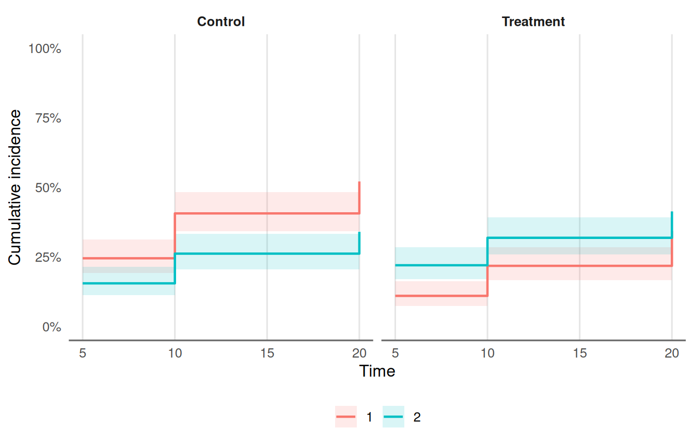

08. Proportional Hazards, Competing Risks and Imputation Pooling
Source:vignettes/competing_risks_and_imputation.Rmd
competing_risks_and_imputation.RmdThis article shows four tools for time-to-event reports: a proportional-hazards audit, cumulative incidence with competing events, a Fine-Gray regression, and pooling over multiple imputations. All data are simulated.
1. Is the proportional hazards assumption reasonable?
tbl_schoenfeld_audit() runs the Schoenfeld-residual test
(survival::cox.zph()) for each term and for the model as a
whole, and flags terms below alpha.
fit <- coxph(Surv(time, status) ~ age + sex + ph.ecog, data = lung)
tbl_schoenfeld_audit(fit)
#> # A tibble: 4 × 5
#> term chisq df p.value non_proportional
#> <chr> <dbl> <dbl> <dbl> <lgl>
#> 1 age 0.188 1 0.665 FALSE
#> 2 sex 2.31 1 0.129 FALSE
#> 3 ph.ecog 2.05 1 0.152 FALSE
#> 4 GLOBAL 4.46 3 0.216 FALSEA small p-value is a prompt to look at the scaled residuals
(plot(cox.zph(fit))), not proof of a problem: with many
events a trivial departure is flagged. Typical remedies are a
time-varying coefficient, stratification on the term, or a restricted
mean survival analysis. A tidymodels workflow or parsnip
model_fit that wraps a coxph engine is
accepted as well.
2. Competing risks: cumulative incidence
When a patient can have more than one kind of event (progression or
death without progression), 1 - Kaplan-Meier with the other
cause censored overstates the incidence of each. The Aalen-Johansen
estimate does not.
set.seed(2026)
n <- 400
d <- data.frame(
id = seq_len(n),
arm = rep(c("Control", "Treatment"), each = n / 2),
age = round(rnorm(n, 62, 9))
)
rate1 <- 0.06 * ifelse(d$arm == "Treatment", 0.6, 1) * exp(0.02 * (d$age - 62))
rate2 <- 0.04
t1 <- rexp(n, rate1)
t2 <- rexp(n, rate2)
cens <- runif(n, 5, 30)
d$time <- pmin(t1, t2, cens)
d$type <- ifelse(d$time == cens, 0L, ifelse(d$time == t1, 1L, 2L))
table(d$type, d$arm)
#>
#> Control Treatment
#> 0 41 63
#> 1 98 60
#> 2 61 77
cif <- tbl_cumulative_incidence(d, "time", "type", group_col = "arm", times = c(5, 10, 20))
cif
#> # A tibble: 12 × 7
#> group cause time cif std.error conf.low conf.high
#> <chr> <chr> <dbl> <dbl> <dbl> <dbl> <dbl>
#> 1 Control 1 5 0.245 0.0304 0.192 0.312
#> 2 Control 1 10 0.406 0.0357 0.342 0.483
#> 3 Control 1 20 0.521 0.0380 0.452 0.601
#> 4 Control 2 5 0.155 0.0256 0.112 0.214
#> 5 Control 2 10 0.262 0.0320 0.206 0.333
#> 6 Control 2 20 0.340 0.0362 0.276 0.419
#> 7 Treatment 1 5 0.11 0.0221 0.0742 0.163
#> 8 Treatment 1 10 0.218 0.0298 0.167 0.285
#> 9 Treatment 1 20 0.343 0.0384 0.276 0.427
#> 10 Treatment 2 5 0.220 0.0293 0.169 0.286
#> 11 Treatment 2 10 0.319 0.0336 0.259 0.392
#> 12 Treatment 2 20 0.413 0.0378 0.346 0.495
plot_cumulative_incidence(cif, facet = TRUE)
Code 1 is the cause of interest and 2 the
competing event; 0 is censoring. The table and plot are
descriptive: they do not test or adjust for anything.
3. Competing risks: Fine-Gray regression
tbl_fine_gray_single() fits the subdistribution hazard
model of one cause for one predictor at a time (it uses
cmprsk::crr()).
rbind(
tbl_fine_gray_single(d, "time", "type", "arm"),
tbl_fine_gray_single(d, "time", "type", "age")
)
#> # A tibble: 2 × 10
#> feature term estimate std.error statistic p.value conf.low conf.high n
#> <chr> <chr> <dbl> <dbl> <dbl> <dbl> <dbl> <dbl> <int>
#> 1 arm armTrea… 0.516 0.162 -4.09 4.34e-5 0.376 0.709 400
#> 2 age age 1.02 0.00959 2.47 1.36e-2 1.00 1.04 400
#> # ℹ 1 more variable: n_event <int>The estimate is a subdistribution hazard ratio: it speaks about the cumulative incidence of the cause of interest. It is not the hazard ratio of a Cox model that censors the competing event, and the two answer different questions. Report the one that matches the question (the incidence a patient faces, or the rate among those still at risk), and say which.
4. Pooling multiple imputations
Fit the same model to each of m imputed data sets,
collect the tidy results, and pool with Rubin’s rules. Here the
imputations are simulated draws of a covariate with missing values.
set.seed(7)
lung2 <- na.omit(lung[, c("time", "status", "age", "sex")])
lung2$ph.ecog <- lung$ph.ecog[as.integer(rownames(lung2))]
miss <- is.na(lung2$ph.ecog)
m <- 10
fits <- lapply(seq_len(m), function(i) {
x <- lung2
x$ph.ecog[is.na(x$ph.ecog)] <- sample(na.omit(lung2$ph.ecog), sum(miss), replace = TRUE)
coxph(Surv(time, status) ~ age + sex + ph.ecog, data = x)
})
tidy_fits <- lapply(fits, function(f) {
s <- summary(f)$coefficients
data.frame(term = rownames(s), estimate = s[, "coef"], std.error = s[, "se(coef)"])
})pool_imputations() pools each term. Pool on the log
hazard ratio scale and use exponentiate = TRUE to report
hazard ratios.
pool_imputations(tidy_fits, exponentiate = TRUE)
#> # A tibble: 3 × 13
#> term m estimate std.error within_var between_var total_var df
#> <chr> <int> <dbl> <dbl> <dbl> <dbl> <dbl> <dbl>
#> 1 age 10 1.01 0.00924 0.0000853 0.00000000623 0.0000853 1.39e 9
#> 2 sex 10 0.571 0.167 0.0281 0.0000000414 0.0281 3.41e12
#> 3 ph.ecog 10 1.59 0.113 0.0128 0.0000397 0.0129 7.79e 5
#> # ℹ 5 more variables: statistic <dbl>, p.value <dbl>, conf.low <dbl>,
#> # conf.high <dbl>, fmi <dbl>With few observations the large-sample degrees of freedom are too
optimistic. Give the complete-data degrees of freedom (for example
N - k) as df_complete to get the Barnard-Rubin
small-sample adjustment:
n_obs <- nrow(lung2)
pool_imputations(tidy_fits, df_complete = n_obs - 3)[, c("term", "df", "p.value", "fmi")]
#> # A tibble: 3 × 4
#> term df p.value fmi
#> <chr> <dbl> <dbl> <dbl>
#> 1 age 223. 0.242 0.00893
#> 2 sex 223. 0.000976 0.00885
#> 3 ph.ecog 222. 0.0000612 0.0122A term that is missing from any imputation is an error, not a silent drop.
Model-level fit
glance_imputations() pools the one-row summaries
(broom::glance() output) in the same way: the mean over the
imputations with its spread, and, where the glance has a
std.error.<statistic> column (such as the
concordance), a Rubin standard error and interval.
glances <- lapply(fits, function(f) {
s <- summary(f)
data.frame(concordance = unname(s$concordance[1]),
std.error.concordance = unname(s$concordance[2]),
logLik = f$loglik[2])
})
glance_imputations(glances)
#> # A tibble: 2 × 10
#> statistic m estimate between_sd min max std.error conf.low
#> <chr> <int> <dbl> <dbl> <dbl> <dbl> <dbl> <dbl>
#> 1 concordance 10 0.637 0.00159 0.634 0.640 0.0250 0.588
#> 2 logLik 10 -734. 0.230 -735. -734. NA NA
#> # ℹ 2 more variables: conf.high <dbl>, fmi <dbl>The pooled concordance is the mean of C-indices from separately completed data sets, not the C-index of a pooled model.